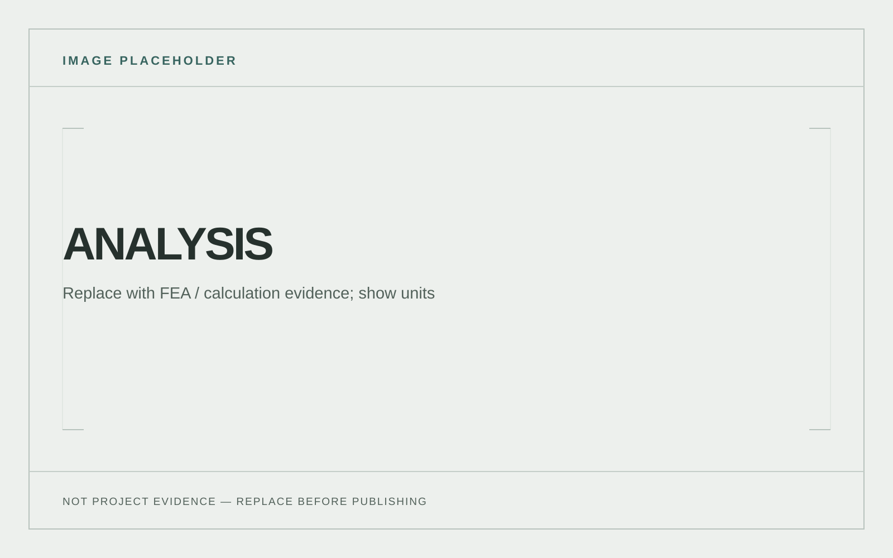

Overview
This project explores a compact phone mounting system for a motorcycle, developed through CAD, physical prototypes and ANSYS analysis. [ADD THE CONTEXT, DESIGN STAGE AND WHAT THE FINAL VERSION DOES.]
Problem / objective
[ADD THE SPECIFIC USER NEED OR FAILURE THAT STARTED THE PROJECT, INCLUDING WHAT EXISTING OPTIONS DID NOT SOLVE.]
Design requirements
- Low-profile form factor and quick release.
- Use compliant spring mechanisms and 3D-printable parts.
- [ADD FIT, VIBRATION, RETENTION, MATERIAL AND WEATHER CONSTRAINTS WITH UNITS WHERE KNOWN.]
Design development
[ADD THE KEY MECHANISM DECISIONS, GEOMETRY CHANGES AND TRADE-OFFS. LABEL WHAT EACH CAD VIEW ACTUALLY SHOWS.]
![Placeholder; replace with cad / mechanism view — [add what this view shows and the design decision].](../images/shared/cad-placeholder.svg)
![Placeholder; replace with sketch, drawing or iteration — [add what changed and why].](../images/shared/drawing-placeholder.svg)
Engineering analysis
[EXPLAIN THE QUESTION THE ANALYSIS ANSWERED AND HOW IT INFLUENCED THE DESIGN. DO NOT PRESENT AN UNSUPPORTED SAFETY CLAIM.]
- Load case
- [ADD FORCE / MOMENT, DIRECTION AND UNITS]
- Assumptions
- [ADD MATERIAL MODEL AND SIMPLIFICATIONS]
- Boundary conditions
- [ADD RESTRAINTS AND CONTACTS]
- Mesh / check
- [ADD MESH DETAIL OR CONVERGENCE CHECK]
- Result
- [ADD QUANTITY, VALUE, UNITS AND LOCATION]
- Design decision
- [ADD WHAT CHANGED BECAUSE OF THE RESULT]

Prototyping / manufacturing
[ADD PRINT MATERIAL, ORIENTATION, SETTINGS OR ASSEMBLY DETAIL ONLY WHERE THEY AFFECT THE ENGINEERING DECISION.]
![Placeholder; replace with first build — [add material, method and purpose].](../images/shared/prototype-placeholder.svg)
Testing & iteration
[ADD HOW YOU TESTED RETENTION, RELEASE, VIBRATION OR FIT; STATE TEST CONDITIONS AND WHAT CHANGED.]
![Placeholder; replace with before — [add test condition and observed issue].](../images/shared/test-placeholder.svg)
Final design / result
[ADD WHAT THE CURRENT DESIGN ACHIEVED, WHAT REMAINS UNVERIFIED, AND THE NEXT REVISION IF APPLICABLE.]

My contribution
[ADD EXACTLY WHAT YOU PERSONALLY MODELLED, ANALYSED, PRINTED, ASSEMBLED AND TESTED.]